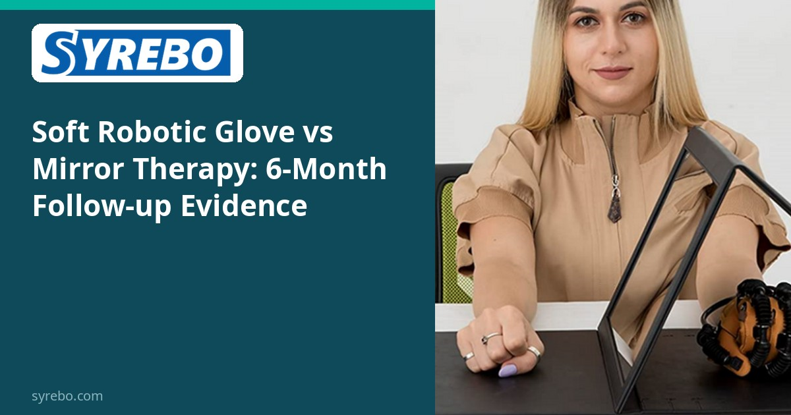
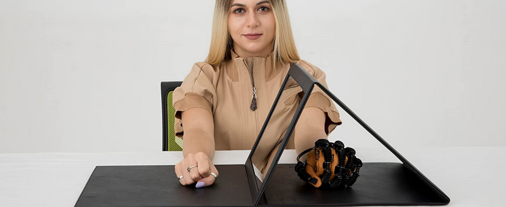

Syrebo klinikinių tyrimų skiltis
Įrodymais pagrįstos robotinės rankų reabilitacijos tyrimų apžvalgos


Veidrodinė terapija yra klasikinis insulto rankų reabilitacijos metodas, o minkšta robotinė pirštinė oro pavara padeda pirštams pakartotinai praktikuoti sugriebimą ir atleidimą. Kuris metodas išlieka ilgiau? Atsakymą pateikia viengubai aklas atsitiktinių imčių kontroliuojamas tyrimas su 6 mėnesių stebėjimu.
49 pacientai po insulto atsitiktinai suskirstyti į minkštos robotinės pirštinės grupę arba veidrodinės terapijos grupę 8 savaičių intervencijai, su stebėjimu po 6 mėnesių, lyginant rankos funkciją ir motorinį atsistatymą.
Intervencijos pabaigoje pirštinės grupėje nustatyti statistiškai reikšmingi tarpgrupiniai pagerėjimai pagal tris rodiklius: Box and Block Test (rankos vikrumą ir sugriebimą bei atleidimą, P=0.004), sugriebimo jėgą (P=0.011) ir Fugl-Meyer Assessment–Upper Extremity (FMA-UE, P=0.021). Svarbu tai, kad pagerėjimai išliko po 6 mėnesių stebėjimo, o tai rodo, kad nauda išliko ir pasibaigus treniravimo laikotarpiui.
Maža imtis (n=49); išvados taikomos į tyrimą įtrauktai populiacijai.